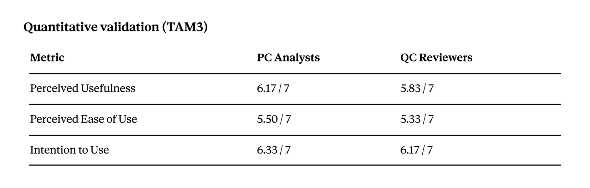
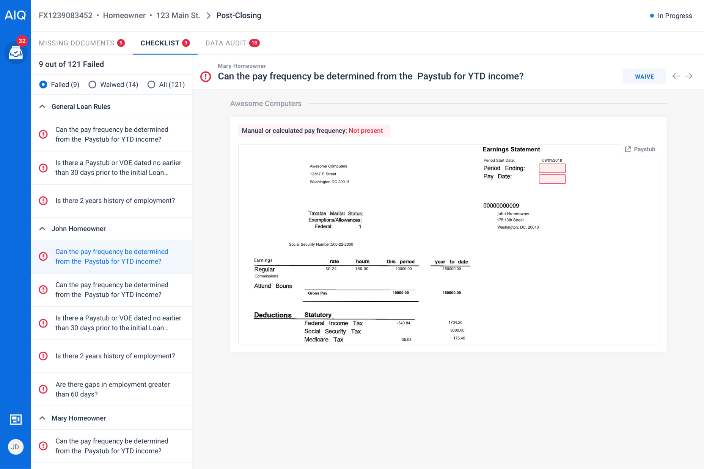
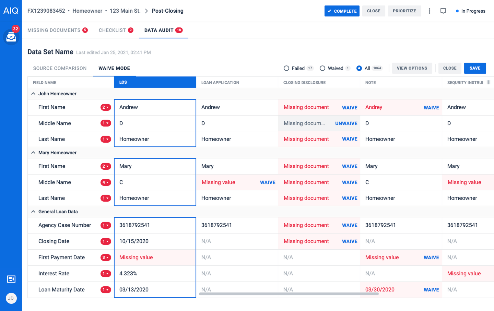
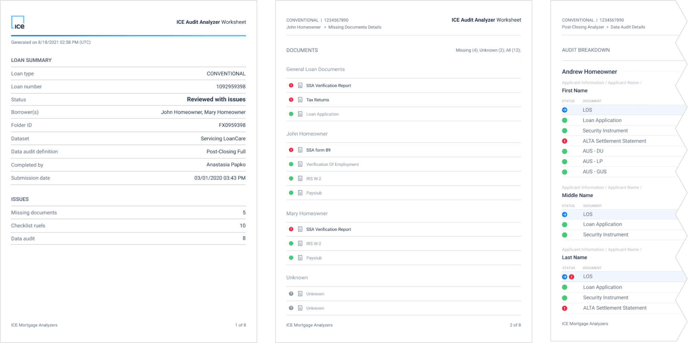
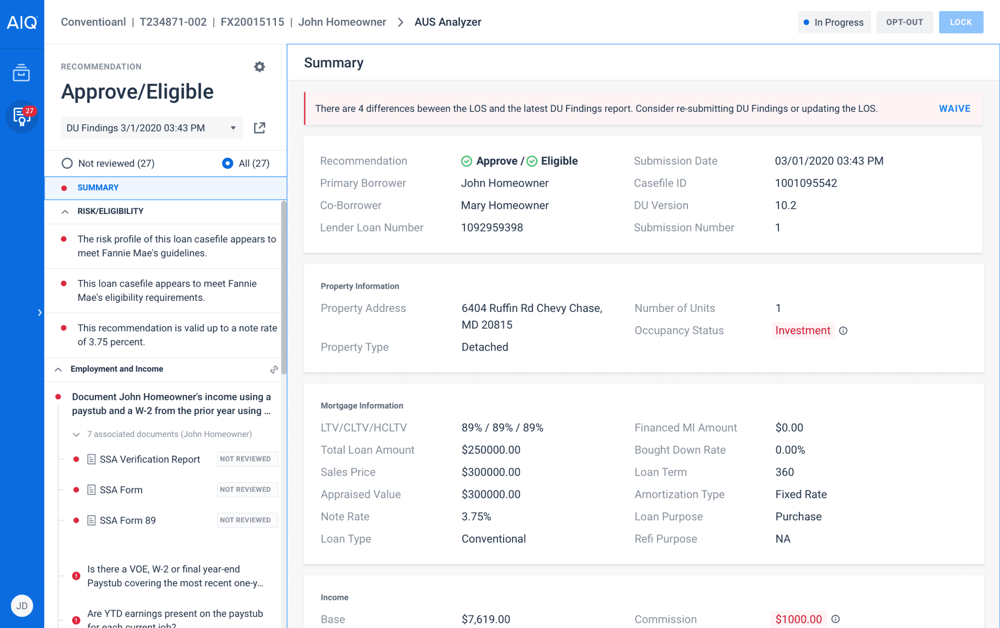

Overview
Audit Analyzer automates post-closing loan review — verifying that closed loan packages are complete, accurate, and compliant before transfer to investors.
I designed the container application, two of three core components (Missing Documents, Checklist), and adapted the existing Data Audit app into a new mode for this context.
Key result: Shifted review from a manual ~45 min "stare and compare" process to an exceptionbased workflow of 10–15 minutes per loan.
The Problem
After a mortgage closes, a Post-Closing Analyst must verify: all required documents are present, data across 20+ documents matches the LOS, and the loan meets dozens of compliance rules.
This was done entirely by hand. Analysts reviewed documents, cross-checked data, and tracked findings manually — known as “stare and compare”.
With 1,000–3,000 loans per month, the cost was enormous — in time and risk. Late errors led to buybacks, penalties, and regulatory exposure. Inconsistent rule application and no clear audit trail made it worse.
Discovery & Research
SME collaboration
Post-closing compliance has layers of regulatory nuance that aren’t intuitive. I worked closely with our SME to understand investor guidelines, loan-type-specific requirements, and compliance edge cases .
Together, we translated regulatory logic into design, shaping 80+ checklist rules and the data audit comparison matrix.
Pre-launch validation (8 participants)
Collaborated with UX Research on validation with real mortgage professionals — 2 focus groups with Post-Closing Analysts and QC Reviewers, 8 participants total, 90-minute remote sessions with workflow walkthrough, interactive demo, TAM3 survey, and structured feedback.
Key findings
-
Analysts wanted to see only exceptions. The exception-based paradigm was strongly validated.
-
Waive flow needed mandatory reasons with full audit trail (who, when, why).
-
Data Audit was the biggest usability concern: too many data points, unclear which mismatches actually matter.
-
Three-tab structure (Missing Docs → Checklist → Data Audit) matched analysts' mental model of the review process.

Ease of Use scores flagged Data Audit as an area needing continued iteration, consistent with qualitative feedback.
Design Principles
-
Exception-based, not exhaustive. Instead of reviewing everything, Audit Analyzer surfaces only failures, reducing focus to 8–15 exceptions from 200+ data points.
-
All decisions are logged. All waivers require a reason. The system records who, when, and why — ensuring a complete audit trail.
-
Three layers, one flow. Missing Documents → Checklist → Data Audit mirrors the analyst's natural review sequence. Red badges on each tab show failure counts at a glance.
-
Adapt, don't rebuild. Data Audit already existed as a standalone app. Instead of rebuilding it, I added a new mode and adapted it to work inside Audit Analyzer.
Design Challenge: Integrating Data Audit
Data Audit existed as a standalone app with its own team. Audit Analyzer needed it to support waiving individual failed data points with mandatory reasons — without this, analysts couldn't complete their review in one place. Data Audit's team resisted adding complexity to an already dense application.
I found the minimal solution: Waive Mode as a separate tab that doesn't touch the existing Regular View. Data Audit's team kept their experience intact and Audit Analyzer got what it needed. I facilitated alignment between both teams.
Key Features
Missing Documents
Determines required documents based on loan parameters and checks presence. Tracks per applicant with filters for Missing, Waived, All. Waive requires mandatory reason with audit trail.
Checklist
Runs 80+ compliance rules automatically. Passing rules show highlighted data on the source document. Failures display specific context. Failed rules are waivable with audit trail.

Data Audit (Waive Mode)
Field-by-field comparison of document data vs. LOS. Waive Mode lets analysts dismiss individual mismatches with reasons. Snippets link any data point back to its location on the source document.

Audit Worksheet
Auto-generated compliance report capturing the full review: loan summary, all issues, waived items with reasons, per-borrower audit breakdown. Replaced the manual paper trail.

Impact
Efficiency
-
~70–75% reduction in review time — from ~45 min to 10–15 min per loan
-
Of 200+ data points and 80+ rules, analysts focus on 8–15 exceptions
-
With lenders processing up to 3,000 loans/month per company, even small time savings per loan compound into massive operational gains
Validation
-
Perceived Usefulness: 6.17/7 among Post-Closing Analysts
-
Intention to Use: 6.33/7 among Post-Closing Analysts
-
Exception-based review paradigm validated in focus groups
Business & Quality
-
First autonomous post-closing solution on the market
-
Mandatory waive trails eliminated inconsistent reviews across analysts
-
Audit Worksheet replaced manual compliance documentation
Takeaway
In complex enterprise products, the designer often becomes the integration point not only for interfaces but also for the teams behind them.
Explore One More Analyzer
AUS Analyzer
Helps lenders clear AUS Report messages and review documents quickly, reducing underwriting errors and inefficiencies.
